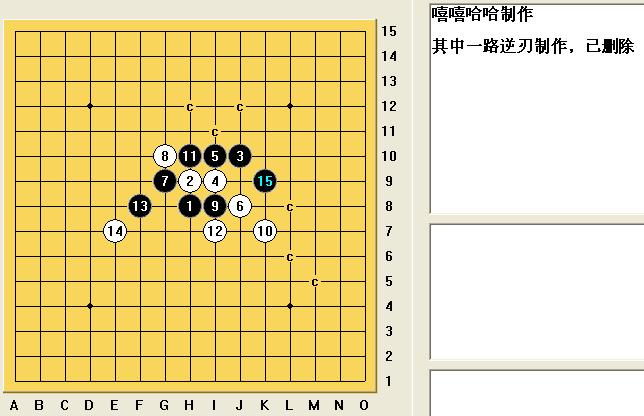
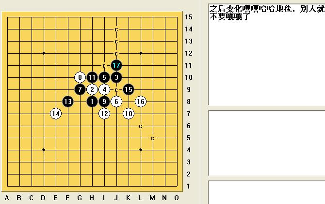
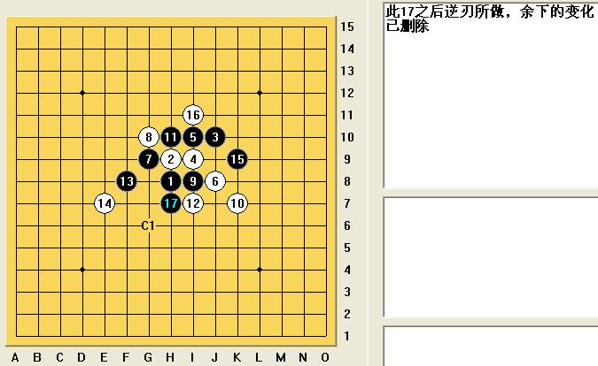
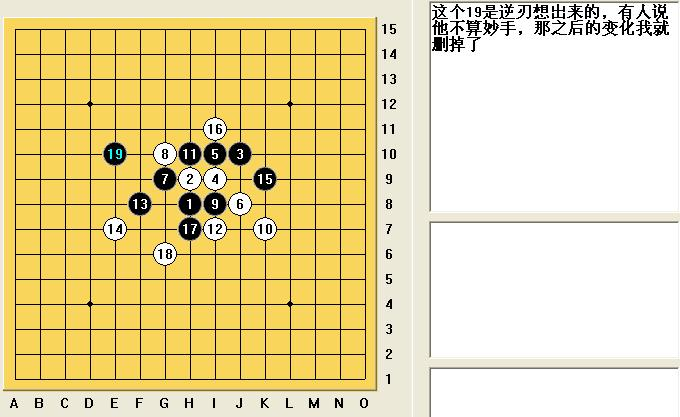

[学术讨论]说这个19不是什么妙手，给删了，我偏就要把截图发出来
#1 [学术讨论]说这个19不是什么妙手，给删了，我偏就要把截图发出来作者：wd1988 发表时间：2009-4-11 14:52:40
这个疏星变化，据传是什么机密，我本来也尊重大家的看法，地毯之后，一直自己收藏着。偶尔看到无敌天下有讨论妙手的文章，一激动就把某个19手发了上去，结果被大师批的体无完肤，什么“这不过是简单的做杀”，什么“只要有谱，一下子就能杀出来”。
废话，有谱当然能杀出来了，但谱又不是浇点水自己长出来的，总得有人做吧？既然大师认为这种谱人人应该有，那我就默认他公开了。除了逆刃做出来的变化之外，其他点都是我自己杀的，这下可没人有意见了吧？逆刃的变化我已经删了，只留下了“很简单的VCT起点”，有能力的人很容易自己地毯的。
再提醒，某些人不要一边说某某研究没价值，某某研究很简单，某某谱“大家”都有（其实所谓的“大家”只不过是圈子里的一小撮人--相对于数十万五子棋爱好者来说），一边又期望别人都没有，只有他有。
这次我发的谱可是我自己做的，当然是知道了结论之后做的。至于说我剽窃了这个结论的---自己抗议去。




［ 失落刀 于 2009-4-11 15:54:11 时奖励此帖[金币加 20 威望加1］
［此帖子已被 茗弈小刀 在 2009-4-22 19:06:58 编辑过］
#2 Re:说这个19不是什么妙手，给删了，我偏就要把截图发出来作者：茗弈小刀 发表时间：2009-4-11 16:12:46
嘻哈老师还是善良热心的，成绩是肯定的，我是支持的！#3 Re:说这个19不是什么妙手，给删了，我偏就要把截图发出来作者：茗弈小刀 发表时间：2009-4-11 16:13:36
 我咋也在学小沈阳了，晕了！
我咋也在学小沈阳了，晕了！#4 Re:说这个19不是什么妙手，给删了，我偏就要把截图发出来作者：刀魂 发表时间：2009-4-11 16:33:21
嘻嘻哈哈，人蛮猛的哦 ，，，敢于挑战权威，敢于挑战大师，，，佩服。。。向你学习，，，
以后，我自己的研究（可能会和所谓的大师有相同研究点）放出来，那些所谓的大师最好少说话，，，
#5 Re:说这个19不是什么妙手，给删了，我偏就要把截图发出来作者：岳麓小棋后 发表时间：2009-4-11 16:34:45
倚楼听风雨，淡看江湖路；红尘人茫茫，相去复匆匆！
#6 Re:说这个19不是什么妙手，给删了，我偏就要把截图发出来作者：聂淼 发表时间：2009-4-11 18:37:59
真是好人啊，能不能好事多到底，把地毯也发下嘛
还有18挡4右边可以杀不，多指教啊
#7 Re:说这个19不是什么妙手，给删了，我偏就要把截图发出来作者：歇菜了 发表时间：2009-4-11 19:36:20
看了别人的关键点做出来也正常,不说是不是剽窃,至少这个点不是你想的
#8 Re:说这个19不是什么妙手，给删了，我偏就要把截图发出来作者：賢周 发表时间：2009-4-11 19:37:55
=======上图对应的爱五子棋谱代码如下，以便你拆解：========
h8h9j10i9i10j8g9g10i8k7h10i7f8e7k9i11h7g6f9g8g12
======================================================
#9 Re:说这个19不是什么妙手，给删了，我偏就要把截图发出来作者：歇菜了 发表时间：2009-4-11 19:45:55
有些东西自己知道就好了,楼主太偏激了,没参加比赛当然知道什么发出来觉得自己很无私,就是不知道楼主有没有考虑到别人,准备好比赛的变化就让这么发出来,一到比赛的时候两眼忘着棋盘发呆,不知道开啥局好
#10 Re:说这个19不是什么妙手，给删了，我偏就要把截图发出来作者：五子痴 发表时间：2009-4-11 19:53:23
其实最先把这个变化公开得人也不是楼主了 要怪就怪最先下出来的人吧
都在比赛中走出来了 还有什么隐蔽性可寻 呵呵 如果觉得可惜就吸取教训吧
想保留的丁点都不要漏！
#11 Re:说这个19不是什么妙手，给删了，我偏就要把截图发出来作者：无尽 发表时间：2009-4-11 19:56:54
5楼好句~~~
估计那个帖子有它的规定，所以给LZ删了，不过应该没人阻止你发出来，这个变化都通天了，呵呵。。。
这个19在我看来的确不算是妙手，其实也没什么好争的
我也都说过每个人都可建立自己的“妙手集”

#12 Re:说这个19不是什么妙手，给删了，我偏就要把截图发出来作者：游戏人间 发表时间：2009-4-11 19:57:21
早没隐蔽性了。。上海智运会选拔赛小猪本来想下这个呢。。结果比赛完黄宇峰给他摆了黑如何胜的。。这个价值现在不大了。。国内比赛的话几乎所有人都知道。。国际比赛的话。。。现在是山口规则了。。不过这个变化确实算不上妙手。只能算复杂的VCT。理解不了什么叫妙手我也不会说啥。毕竟大家境界不同~慢慢玩噢~#13 Re:说这个19不是什么妙手，给删了，我偏就要把截图发出来作者：忧郁的双眼 发表时间：2009-4-11 20:03:38
那个是暴力出来的
当时我讲的原话：不算妙手
楼主有意思也别这么偏激
#14 Re:说这个19不是什么妙手，给删了，我偏就要把截图发出来作者：yoda 发表时间：2009-4-12 7:39:56
那个19的确不能算妙手。盘面上显而易见的好点。下面的19也能胜，左右链接的要点，两个19思路一样手段不同而已。
=======上图对应的爱五子棋谱代码如下，以便你拆解：========
h8h9j10i9i10j8g9g10i8k7h10i7f8e7k9i11h7g6g12
======================================================
#15 Re:说这个19不是什么妙手，给删了，我偏就要把截图发出来作者：茗弈小刀 发表时间：2009-4-12 16:00:48
谢谢各位老师的指点，在此祝大家棋技更强，也祝大鱼师傅养精蓄锐，改写历史！#16 Re:[学术讨论]说这个19不是什么妙手，给删了，我偏就要把截图发出来作者：茗弈小刀 发表时间：2009-4-22 19:08:16
我的挚友嘻嘻哈哈很可爱，很坚持！#17 Re:[学术讨论]说这个19不是什么妙手，给删了，我偏就要把截图发出来作者：茗弈梓轩 发表时间：2009-4-23 8:53:42
很好很强大！
#18 Re:[学术讨论]说这个19不是什么妙手，给删了，我偏就要把截图发出来作者：雅典娜 发表时间：2009-4-23 10:27:47
算和不算都不重要,重要的是你真的会了吗? 我不会,所以学习的价值还是很好的!毕竟很多初学者没有掌握这种变化! 谢谢嘻嘻哈哈老师的辛苦劳作!［ gerbo 于 2009-6-9 22:17:10 时花20金币送鲜花一朵］